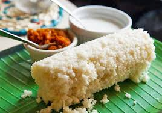

Pittu

Description
This is the only recipe you need for the best Sri Lankan coconut roti/flatbread. It's so easy to prepare and I have also included the freezing options, serving suggestions, and really good tips to get the flavors right. Go check it out!
Ingredients
- 5 cups desiccated coconut
- 1 (15oz) can coconut milk
- 1 can hot water (use the coconut milk can to measure)
- 2 tsp salt
- 8 cups rice flour
Steps
- Place the desiccated coconut in bowl and pour coconut milk and can of hot water over it. Mix well and allow coconut to soak for 20-30 minutes.
- Sift together rice flour and salt. Set aside.
- Set up steamer with hot water and bring pittu steamer to a boil until you see the steam coming out of the top of the steamer.
- In a new bowl, take up cup of sifted rice flour/salt mixture and mix with 2/3cup soaked coconut mixture. Use fingers to create a "crumble texture".
- This texture is really important. It should be a dry crumble so sprinkle a little flour mixture to make sure you get the right texture.
- Take the steamer tube and place the piece that separates the tube part from the steamer part. It's the little metal circle in the photo shown here that has holes. These holes allow the steam to go up through the pittu mixture and steam it all together into a tube.
Note: We recommend that you wash this round metal piece between each steaming because it will get pittu residue on it and that will prevent the steam from going through the holes. I simply placed a small bowl of cold water to dip it into and clean off quickly before resetting it in the pittu steamer.
- Then fill the tube with the dry crumble mixture of the rice flour and coconut until you get to the top. Place the lid on the steamer tube and back on the base that is full of boiling water.
- Steam pittu for 5 minutes until you see steam coming out of the top of the pittu steamer. Then allow it to steam for about 1-2 more minutes. That means the steam has worked it's way through all the pittu ingredients and steamed everything together. Take the pittu tube off the base and use a wooden dowel/pole to push the pittu out of the steamer.
- Repeat until all the mixture is used and you have cooked your pittu.
- Note: My mother says that once you are steaming the pittu, work on making the crumble for the next tube of pittu. It's best to work in batches otherwise if you mix all the flour/salt with the soaked coconut at one time the crumbles mixture becomes too tough or soggy.
This amount of pittu will serve 6-8 people or more. Eat it with, coconut milk gravy, lunu miris and any spicy meat, fish or vegetable curry.
- Note: To make the coconut gravy just mix 1 can (15oz) with 1 tsp of salt. Stir well and this is poured over the pittu and eaten with the other condiments and curries.